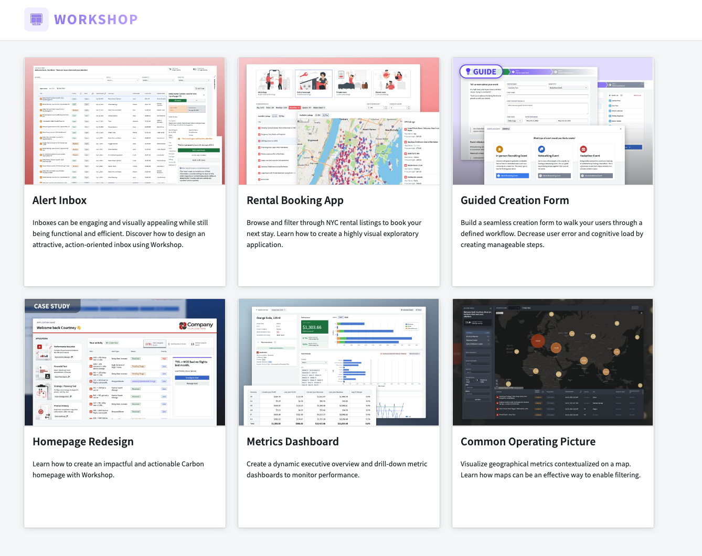
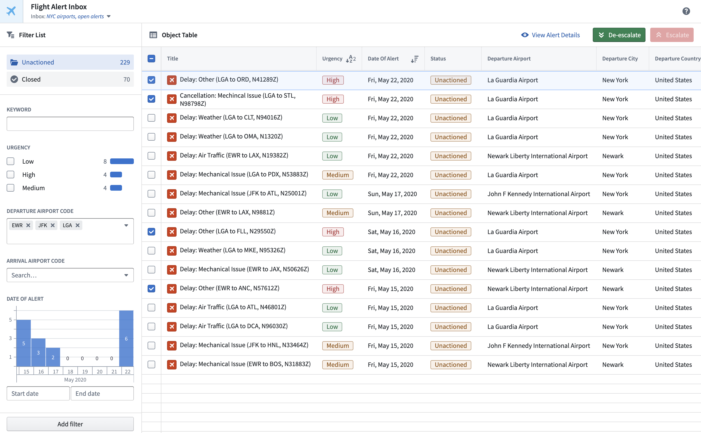
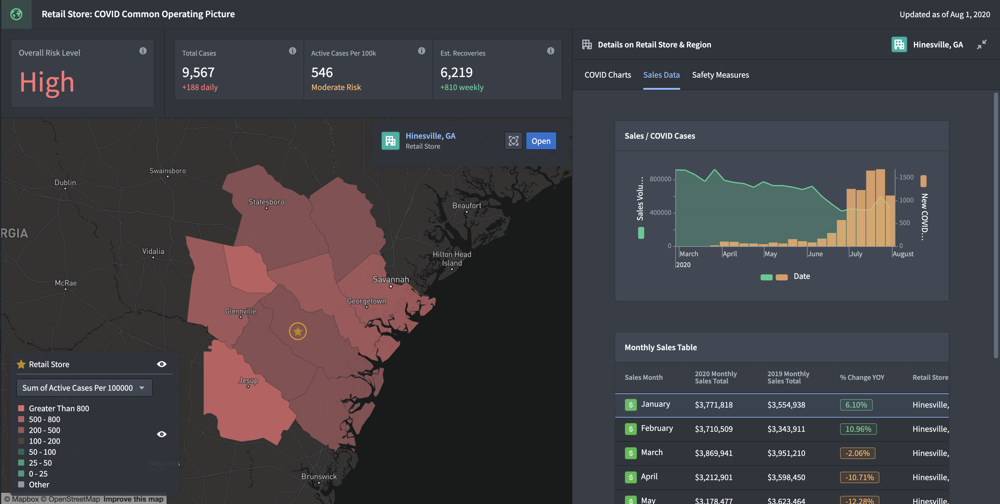

Create ready-to-use applications using your own data directly from the Workshop home page. Currently, there is support for building an inbox, map, and metrics application.
To begin, choose the template you would like to use. Then, simply select an object type and relevant properties to be used in the template. The images below illustrate this process for the creation of a map application.


Once you have chosen a save location for the module and selected Create module, you will have a ready-to-use template with the data you inputted.

The Workshop Design Hub is a Marketplace product that is a compilation of example applications and templates designed to assist you in creating superior applications using Foundry Workshop, a low-code application building tool.
The Design Hub consists of six high-quality Workshop application examples for you to use as inspiration for your own workflows.
Design Hub modules are intended as design examples and inspiration rather than ready-made app templates. These example modules come with notional data and provide functional end-to-end apps which can be reverse-engineered and analyzed by app builders. We hope that the concepts and patterns in Design Hub modules can be applied to new apps that you build or existing apps that you manage.

The following Workshop applications are available in the Design Hub, with each one's unique features and functionalities listed below:
To access a Workshop Design Hub sample module, navigate to the Workshop Design Hub project. Then, duplicate the desired Workshop module to a location of your choosing.
To access the Workshop Design Hub from your Foundry enrollment, contact your Palantir representative.
By default, the assets in the Workshop Design Hub (Ontology objects, apps, datasets) are set to read-only and we strongly recommend duplicating any Workshop module to another project before modifying it for a specific use case. In the case where your administrator has configured the assets to be read-write, it is still essential to treat Ontology elements (such as object types or action types) and Workshop applications within the Design Hub as read-only as periodic Design Hub updates overwrite local changes made to these aforementioned elements.
A common application type built in Workshop is an inbox. Often, the core components of an inbox are:
The example below shows an example Workshop inbox displaying information about Flight Alerts that require triage, review, and action. Core widgets used include the Prominent Terms Filter, Filter List, Object Table, and Button Group. Additionally, state saving is enabled to allow users to preserve the inbox settings most relevant to them and also share these saved views with other users.

Senior leaders often need a way to understand how the critical parts of their organization are functioning in real-time. Common operating pictures built in Workshop can convey the geospatial context, detailed charts, and top-line metrics necessary to make high-level decisions on the fly.
The example below shows an example Workshop common operating picture overlaying COVID case information atop retail store sales and operations data. The aim is to help a store manager understand store performance and more effectively adjust their plans as local case counts change. Core widgets used include the Metric Card, Map, Chart: XY, and Object Table.
